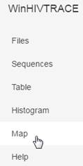
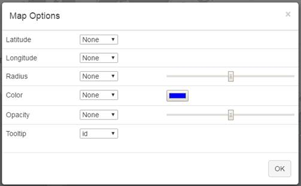
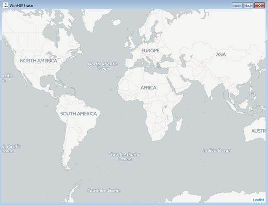

|
||||||||||
MicrobeTrace - Help |
Viewing Maps
After uploading a file, you can view the nodes displayed in a map.
- Click the
 button next to the Settings button.
button next to the Settings button.
Result: The system displays the HIV Trace menu.

- Click the Map option.
Result: The system displays the Map Options window.
 - Select the options to use for displaying the map. For example, you can choose the color, opacity, or choose to display tool tips in your map.
- After selecting the map options, click OK.
Result: The system displays the data in map format.

|
|
Section 2
Section 3